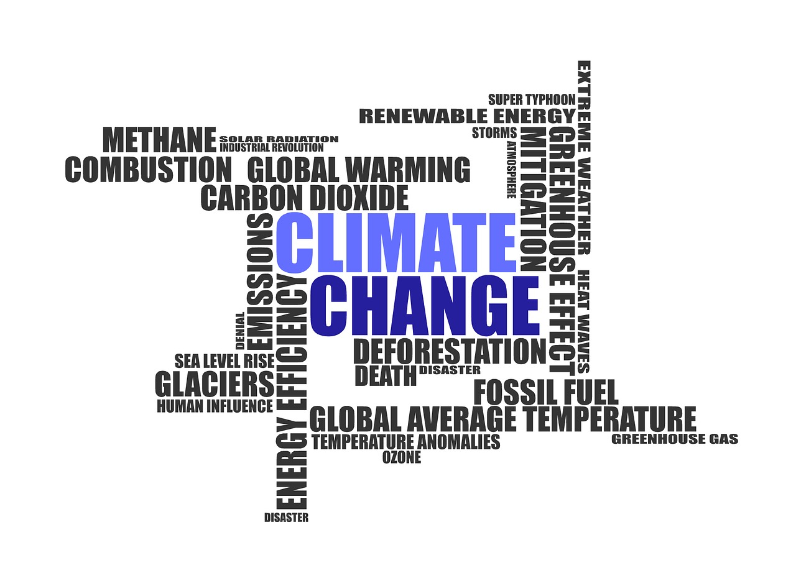
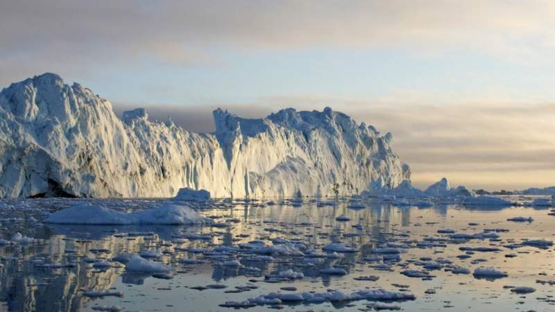
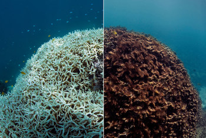
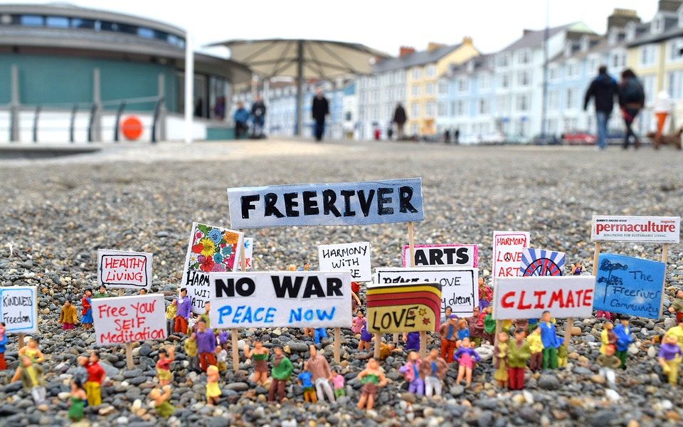
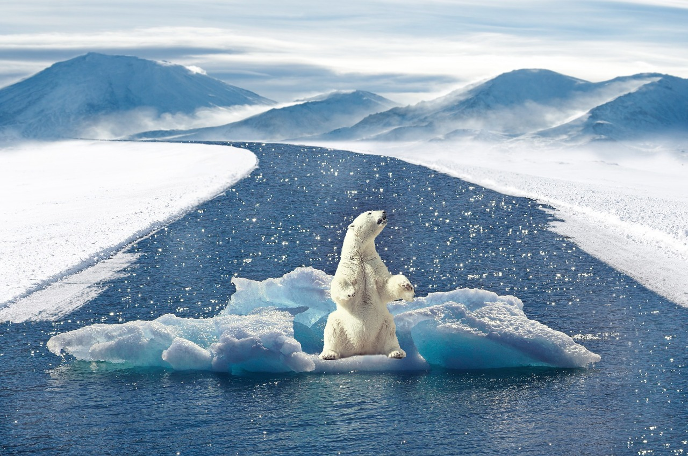

Medidas urgentes contra a mudança global climática precisam ser tomadas e os impactos causados estão sendo notados gerando várias consequências que podem até se tornarem irreversíveis, exemplo disso são as catástrofes naturais em todos os países. Esse projeto tem como intuito alertar e reforçar os riscos causados pelos nossos descasos com o meio ambiente.

Não apenas a temperatura em algumas partes do Mar de Barents está aumentando, mas a própria estrutura do oceano está mudando.

Em relatório, divulgado este mês, Programa das Nações Unidas para o Meio Ambiente, Pnuma, diz que tendência se acentuou em 2014 por causa do excesso de calor naquele ano; fenômeno começou no Pacífico e se espalhou rapidamente pelos Oceanos Índico e Atlântico.
Organização Meteorológica Mundial informa que este ano será um dos três mais quentes desde o início dos registros; nem mesmo efeitos do La Niña foram suficientes para diminuir os níveis de calor deste ano.
TEXTO DE EXPLICAÇÃO.

TEXTO DE EXPLICAÇÃO.

TEXTO DE EXPLICAÇÃO.